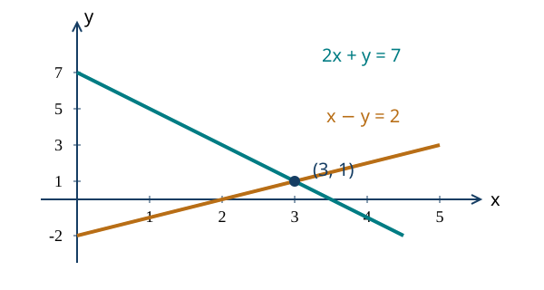
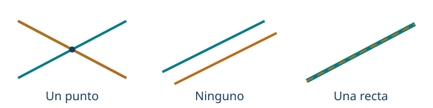

Sistemas de ecuaciones y relaciones lineales
← Ecuaciones, inecuaciones y valor absoluto · Índice del libro · Siguiente →
Una boletería registra el número de personas que asistieron a una función y la recaudación de esa noche. Entre las entradas vendidas hay dos precios, de adulto e infantil, y queremos reconstruir cuántas correspondieron a cada clase. Podemos ensayar repartos que conserven el total de asistentes, pero algunos producirán demasiado dinero y otros demasiado poco. La respuesta tendrá que cumplir los dos registros al mismo tiempo.
En el capítulo anterior buscábamos valores sujetos a una condición. La boletería nos pide coordinar varias incógnitas y varias condiciones, y ofrece también una estrategia para empezar: imaginar que todas las entradas tuvieron el precio menor y estudiar qué cambia al sustituir una por una de adulto. Ese razonamiento anticipa la eliminación de una incógnita. Lo compararemos con la sustitución y con la interpretación geométrica de las ecuaciones para comprender cuándo los datos determinan una respuesta y cuándo dejan posibilidades abiertas o resultan incompatibles.
Dos condiciones para una misma situación
Problema 1. Lo que sabe la boletería
Enunciado. Se vendieron 20 entradas. Las de adulto costaban 5000 pesos y las infantiles, 3000 pesos. La recaudación fue de 84000 pesos. ¿Cuántas entradas de cada clase se vendieron?
Solución. Llamemos \(a\) a las entradas de adulto e \(i\) a las infantiles. Ambas cantidades deben ser enteras no negativas. El número de entradas y la recaudación producen \[\begin{cases}a+i=20,\\5000a+3000i=84000.\end{cases}\] Podemos comenzar imaginando que todas fueron infantiles. En ese caso se habrían recaudado \(20\cdot3000=60000\) pesos. Cada entrada de adulto agrega 2000 pesos respecto de esa base. Faltan \(84000-60000=24000\) pesos, por lo que hubo \(24000/2000=12\) entradas de adulto y ocho infantiles. Comprobamos las dos condiciones: \(12+8=20\) y \(5000\cdot12+3000\cdot8=84000\). El razonamiento ya contiene un método de eliminación: restar 3000 veces la primera ecuación de la segunda deja \(2000a=24000\).
Una solución de un sistema de dos incógnitas es un par ordenado \((x,y)\) que satisface todas sus ecuaciones. El orden importa: la primera coordenada corresponde a la primera incógnita. El dominio puede ser \(\mathbb R^2\), el conjunto de pares reales, o una parte de él impuesta por el problema. En la boletería trabajamos con pares de enteros no negativos.
Problema 2. Cumplir una ecuación no basta
Enunciado. Decide cuáles de los pares \((2,1)\) y \((1,2)\) resuelven el sistema \(x+y=3\), \(2x-y=3\).
Solución. Ambos pares cumplen \(x+y=3\). En la segunda ecuación, \((2,1)\) da \(2\cdot2-1=3\) y sirve; \((1,2)\) da \(2\cdot1-2=0\) y falla. La primera condición describe muchos pares, entre ellos \((0,3)\) y \((3,0)\). La segunda selecciona, entre los que sobreviven a la primera, los que también la cumplen. Más adelante justificaremos que \((2,1)\) es la única solución de este sistema.
Una ecuación lineal de dos incógnitas tiene la forma \(ax+by=c\), con coeficientes reales conocidos. Cada término con incógnita consta de un coeficiente conocido multiplicado por esa incógnita. Una condición como \(xy=6\) o \(x^2+y=4\) requiere otros métodos. En un sistema lineal exigimos que todas las ecuaciones tengan aquella forma; admitiremos también los casos degenerados en que los coeficientes de las incógnitas se anulan.
Sustituir una relación dentro de otra
Si conocemos \(y\) en términos de \(x\), podemos usar esa información en la otra ecuación. La expresión usada para reemplazar a \(y\) procede de una condición que toda solución debe satisfacer. Después de resolver la ecuación resultante, reconstruimos la coordenada que habíamos expresado en función de la otra.
Problema 3. Una incógnita escrita con la otra
Enunciado. Resuelve \(y=2x-1\), \(x+y=8\).
Solución. La primera ecuación obliga a que \(y\) sea \(2x-1\). Sustituimos esa expresión en la segunda: \(x+(2x-1)=8\). Reunir términos da \(3x=9\), de donde \(x=3\). Regresamos a la primera relación y obtenemos \(y=2\cdot3-1=5\). El par \((3,5)\) cumple ambas ecuaciones. Además, cualquier solución tendría que producir \(x=3\) en la ecuación sustituida y, después, \(y=5\); por eso no falta ningún otro par.
Problema 4. Fracciones en una de las condiciones
Enunciado. Resuelve \(x/2+y/3=3\), \(x-y=1\).
Solución. Los denominadores son constantes no nulas, así que admitimos todo par real. De la segunda ecuación obtenemos \(x=y+1\). Sustituimos en la primera y multiplicamos por 6: \[3(y+1)+2y=18.\] Entonces \(5y+3=18\), luego \(y=3\) y \(x=4\). En la ecuación inicial \(4/2+3/3=2+1=3\); en la otra, \(4-3=1\). El conjunto solución es \(\{(4,3)\}\). Multiplicar por 6 no añade restricciones ni candidatos porque 6 nunca se anula.
La sustitución es especialmente cómoda cuando una incógnita aparece con coeficiente 1 o \(-1\). Si para despejar tuviéramos que dividir por un parámetro, antes habría que revisar cuándo ese coeficiente puede valer cero. La elección del método depende de la escritura concreta del sistema.
Eliminar sin perder una condición
En la boletería restamos del ingreso total el que habrían producido las entradas al precio menor; la diferencia dejó visible la contribución de las entradas de adulto. Esa operación combinaba dos ecuaciones para eliminar una incógnita. En un sistema general buscaremos multiplicadores que hagan iguales u opuestos sus coeficientes y después restaremos o sumaremos las ecuaciones. Conservaremos una de las condiciones originales para reconstruir la incógnita eliminada y regresar al sistema, porque la suma aislada también puede cumplirse en pares que incumplen los datos iniciales.
Problema 5. Coeficientes opuestos
Enunciado. Resuelve \(x+y=7\), \(3x-y=5\).
Solución. Sumamos las ecuaciones y resulta \(4x=12\), así que \(x=3\). Conservamos la primera ecuación: \(3+y=7\), de donde \(y=4\). El par \((3,4)\) satisface también \(3\cdot3-4=5\). La transformación completa fue reemplazar la segunda ecuación por la suma, manteniendo la primera. Desde el sistema transformado recuperamos la segunda original restando la primera a la suma; el paso es reversible.
Problema 6. Preparar los coeficientes
Enunciado. Resuelve \(2x+3y=19\), \(5x-2y=0\).
Solución. Para eliminar \(y\), multiplicamos la primera ecuación completa por 2 y la segunda completa por 3: \[4x+6y=38,\qquad15x-6y=0.\] La suma da \(19x=38\), luego \(x=2\). Sustituir en \(5x-2y=0\) produce \(10-2y=0\), de donde \(y=5\). Comprobamos \(2\cdot2+3\cdot5=19\) y \(5\cdot2-2\cdot5=0\). Los multiplicadores 2 y 3 son no nulos, y la recuperación de una ecuación desde la suma y la otra garantiza que el método conserva todas las soluciones.
Problema 7. Una suma con demasiadas soluciones
Enunciado. Al sumar \(x+y=6\) y \(x-y=2\) se obtiene \(2x=8\). ¿Es correcto reemplazar el sistema por esa única ecuación?
Solución. La suma obliga a \(x=4\), pero no dice nada sobre \(y\). Por ejemplo, \((4,100)\) cumple \(2x=8\) y falla en las dos condiciones originales. Debemos conservar una de ellas: con \(x+y=6\) obtenemos \(y=2\). El par \((4,2)\) cumple también \(x-y=2\). La ecuación sumada es una consecuencia necesaria del sistema; junto con una ecuación conservada forma un sistema equivalente. Esa diferencia explica por qué eliminar una incógnita no autoriza a borrar información sin control.
Transformaciones que conservan un sistema
| Propiedad | Fórmula y condiciones de uso |
|---|---|
| Cambiar el orden | Intercambiar dos ecuaciones conserva el conjunto solución. |
| Escalar una ecuación | Multiplicar todos sus términos por \(c\ne0\) conserva las soluciones. El coeficiente puede depender de un parámetro solo en la rama donde no se anula. |
| Reemplazar por una combinación | Conservar \(E_1\) y reemplazar \(E_2\) por \(E_2+cE_1\) es reversible para todo real \(c\). |
| Sustituir una incógnita | Si una ecuación equivale a \(y=f(x)\), el sistema equivale a conservar esa igualdad y reemplazar \(y\) por \(f(x)\) en las otras. |
| Restringir el dominio | Las soluciones admisibles son las soluciones algebraicas intersectadas con el dominio del modelo. |
Pruebas. Véase «Equivalencia de sistemas y operaciones de filas» en el apéndice.
Cada ecuación dibuja un lugar
Un par real puede representarse como un punto del plano: \(x\) indica su posición horizontal e \(y\), su posición vertical. Al fijar la ecuación \(ax+by=c\), con al menos uno de \(a,b\) distinto de cero, los puntos que la satisfacen forman una recta. Si \(b\ne0\), despejar da \(y=-(a/b)x+c/b\); si \(b=0\), necesariamente \(a\ne0\) y obtenemos la recta vertical \(x=c/a\).
La solución del sistema debe estar en las dos rectas. Por eso la buscamos en su intersección. El dibujo nos ayuda a comprender cuántas soluciones cabe esperar; los cálculos exactos permiten decidir cuáles son sus coordenadas.
Problema 8. Una intersección que podemos verificar
Enunciado. Resuelve e interpreta gráficamente \(2x+y=7\), \(x-y=2\).
Solución. Las rectas son \(y=7-2x\) e \(y=x-2\). Para dibujar la primera podemos usar \((0,7)\) y \((3,1)\); para la segunda, \((0,-2)\) y \((3,1)\). La intersección sugerida es \((3,1)\). La calculamos sin depender de la escala del dibujo: al sumar las ecuaciones resulta \(3x=9\), luego \(x=3\) e \(y=1\). El par cumple \(2\cdot3+1=7\) y \(3-1=2\). Cualquier solución debe tener ese valor de \(x\) y ese valor de \(y\).

Problema 9. Una recta vertical también es una condición lineal
Enunciado. Resuelve \(x=2\), \(3x+2y=10\).
Solución. La primera condición describe todos los puntos de la recta vertical que pasa por \(x=2\). Sustituyendo en la segunda encontramos \(6+2y=10\), por lo que \(y=2\). La única intersección es \((2,2)\). No necesitamos escribir la primera recta como \(y=mx+b\): una recta vertical no admite esa forma porque contiene muchos valores de \(y\) para el mismo \(x\).
Una, ninguna o infinitas soluciones
Dos rectas pueden cortarse en un punto, ser paralelas distintas o coincidir. En el cálculo, estas posibilidades aparecen como una ecuación que determina la incógnita, una igualdad imposible o una identidad que deja una cantidad libre. También debemos contemplar las ecuaciones que tienen ambos coeficientes nulos: \(0x+0y=c\) puede describir todo el plano o ningún punto.
Problema 10. Dos condiciones incompatibles
Enunciado. Resuelve \(2x-y=1\), \(4x-2y=6\).
Solución. El miembro izquierdo de la segunda ecuación es el doble del primero. Si la primera se cumple, ese miembro debe valer 2, pero la segunda exige que valga 6. Restar dos veces la primera a la segunda produce \(0=4\), imposible. No hay solución. En forma despejada las rectas son \(y=2x-1\) e \(y=2x-3\): tienen la misma inclinación y distintas posiciones.
Problema 11. Dos escrituras de la misma condición
Enunciado. Resuelve \(2x-y=1\), \(4x-2y=2\).
Solución. La segunda ecuación es exactamente el doble de la primera. Al restar ese doble queda \(0=0\), que no impone una condición adicional. Elegimos libremente \(x=t\), con \(t\in\mathbb R\). La primera ecuación obliga a \(y=2t-1\). Todas las soluciones, y solo ellas, son \[\{(t,2t-1):t\in\mathbb R\}.\] Sustituir cualquier \(t\) da \(2t-(2t-1)=1\) y el doble de esa igualdad. El parámetro describe la recta completa; escoger un par particular no habría resuelto el sistema entero.

Problema 12. Una ecuación que no restringe nada
Enunciado. Resuelve \(0x+0y=0\), \(x-y=3\).
Solución. La primera igualdad es verdadera para todo par real. Sobrevive únicamente la segunda condición. Podemos elegir \(y=t\) y obtener \(x=t+3\), con \(t\in\mathbb R\). El conjunto solución es \(\{(t+3,t):t\in\mathbb R\}\). La igualdad \(0=0\) no es una recta: en el plano, su conjunto de soluciones es todo \(\mathbb R^2\). La intersección de ese plano completo con \(x-y=3\) es la recta de la segunda ecuación.
Un criterio general y sus excepciones
Consideremos \[\begin{cases}ax+by=e,\\cx+dy=f.\end{cases}\] Para eliminar \(y\), sus coeficientes \(b\) y \(d\) deben producir el mismo término: multiplicamos la primera ecuación por \(d\) y la segunda por \(b\), y restamos. El término \(bdy\) desaparece y queda \((ad-bc)x=ed-bf\). Otra combinación elimina \(x\) y da \((ad-bc)y=af-ec\). Hemos obtenido estas condiciones sin dividir por ningún coeficiente. El mismo número, \(D=ad-bc\), multiplica a ambas incógnitas; lo llamamos determinante del sistema.
Si \(D\ne0\), cualquier solución tiene necesariamente \[x=\frac{ed-bf}{D},\qquad y=\frac{af-ec}{D}.\] Al sustituir estas expresiones en las dos ecuaciones se comprueba que las cumplen. Tenemos existencia y unicidad. Si \(D=0\), estas divisiones no existen y debemos estudiar la compatibilidad de las condiciones. El determinante cero, por sí solo, no distingue un sistema imposible de uno con infinitas soluciones.
Problema 13. Usar el criterio después de comprenderlo
Enunciado. Resuelve \(3x+2y=7\), \(2x-y=0\) mediante el determinante.
Solución. Los coeficientes son \(a=3\), \(b=2\), \(c=2\), \(d=-1\), \(e=7\), \(f=0\). El determinante es \(3(-1)-2\cdot2=-7\), no nulo. Por tanto, \[x=\frac{7(-1)-2\cdot0}{-7}=1,\qquad y=\frac{3\cdot0-7\cdot2}{-7}=2.\] El par \((1,2)\) cumple \(3+4=7\) y \(2-2=0\). La fórmula resume las combinaciones de ecuaciones; no reemplaza la revisión de que el denominador sea distinto de cero.
Problema 14. Tres ceros que no garantizan compatibilidad
Enunciado. En el sistema \(0x+0y=1\), \(0x+0y=0\), calcula \(ad-bc\), \(ed-bf\) y \(af-ec\). ¿Permiten concluir que hay infinitas soluciones?
Solución. Los seis coeficientes, salvo \(e=1\), son cero. Las tres expresiones pedidas valen cero. Sin embargo, la primera condición es \(0=1\), imposible. El sistema no tiene solución. En los casos degenerados hay que leer las ecuaciones originales. Si todos los coeficientes de las incógnitas son cero, las constantes deciden: todas nulas dejan el plano completo; alguna no nula hace el sistema incompatible.
Para completar la clasificación cuando \(D=0\), supongamos que existe una ecuación con algún coeficiente de incógnita no nulo. Podemos tomarla como primera. La otra fila de coeficientes es proporcional a ella. Si la constante guarda el mismo factor de proporcionalidad, queda una sola recta; si no lo guarda, las condiciones son incompatibles. La palabra «proporcional» significa aquí que existe un número multiplicador común, incluso cero. Así evitamos cocientes como \(c/a\) cuando \(a=0\).
Clasificación de los sistemas lineales de dos incógnitas
| Propiedad | Fórmula y condiciones de uso |
|---|---|
| Solución única | Si \(D=ad-bc\ne0\), \(x=(ed-bf)/D\) e \(y=(af-ec)/D\). |
| Determinante nulo con fila no nula | Si \(D=0\) y \((a,b)\ne(0,0)\), existe \(\lambda\) con \((c,d)=\lambda(a,b)\). Hay una recta de soluciones si \(f=\lambda e\); en otro caso no hay solución. Se pueden intercambiar las filas para disponer de una primera fila no nula. |
| Todas las filas nulas | Si \(a=b=c=d=0\) y \(e=f=0\), la solución es \(\mathbb R^2\). Si alguna de \(e,f\) es no nula, es \(\varnothing\). |
| Interpretación geométrica | Cuando ambas ecuaciones representan rectas, su intersección es un punto, una recta completa o el conjunto vacío. |
Pruebas. Véase «Determinante, existencia y clasificación de sistemas» en el apéndice.
Un parámetro obliga a revisar la frontera
Un modelo puede cambiar con una tarifa, una capacidad o un coeficiente. Resolver una familia significa describir las soluciones para todos los valores admisibles del parámetro. Los valores que anulan el determinante merecen una rama propia.
Problema 15. Un valor del parámetro vuelve imposible el sistema
Enunciado. Clasifica y resuelve \(x+y=2\), \(x+ky=3\), según el parámetro real \(k\).
Solución. Restando la primera ecuación a la segunda obtenemos \((k-1)y=1\). Si \(k\ne1\), resulta \(y=1/(k-1)\) y \(x=2-y=(2k-3)/(k-1)\). Al sustituir, la suma es 2 y \(x+ky=2+(k-1)y=3\). Si \(k=1\), las ecuaciones exigirían simultáneamente \(x+y=2\) y \(x+y=3\): no hay solución. La división por \(k-1\) solo se empleó en la rama donde ese número es no nulo.
Problema 16. Una familia que siempre deja una recta
Enunciado. Clasifica \(x+y=2\), \(kx+ky=2k\) para todo \(k\in\mathbb R\).
Solución. La segunda ecuación es \(k\) veces la primera. Para \(k\ne0\) aporta la misma condición; para \(k=0\) se convierte en \(0=0\) y tampoco agrega restricciones. Para todo parámetro hay infinitas soluciones: \(\{(t,2-t):t\in\mathbb R\}\). No necesitamos dividir la segunda ecuación por \(k\); conservar la primera permite tratar todos los casos con un solo argumento.
Lo que un modelo permite aceptar
La solución algebraica pertenece a un dominio amplio. El relato puede exigir cantidades positivas, números enteros o límites de capacidad. Estas condiciones forman parte del problema y se comprueban sobre el par completo. Las unidades también orientan la construcción: sumar litros con litros es legítimo; sumar litros con porcentajes sin convertirlos en cantidades de sustancia no lo es.
Problema 17. Preparar una mezcla con dos disoluciones
Enunciado. Se necesitan 12 litros de una disolución al 15 %, mezclando disoluciones al 30 % y al 10 %. ¿Cuántos litros de cada una se usan? Supón volúmenes aditivos y conservación del concentrado.
Solución. Sean \(x,y\ge0\) los litros de las disoluciones al 30 % y al 10 %, respectivamente. El volumen total exige \(x+y=12\). Los litros de concentrado exigen \(0{,}30x+0{,}10y=0{,}15\cdot12=1{,}8\). Multiplicando la segunda ecuación por 10 resulta \(3x+y=18\). Restar la primera da \(2x=6\), de donde \(x=3\) e \(y=9\). Las cantidades son no negativas, suman 12 litros y contienen \(0{,}9+0{,}9=1{,}8\) litros de concentrado. Se usan tres litros de la primera disolución y nueve de la segunda.
Problema 18. Contar patas y animales
Enunciado. En un recinto hay gallinas y vacas: 18 animales y 50 patas en total. ¿Cuántos hay de cada especie?
Solución. Sean \(g,v\) sus cantidades, enteras no negativas. Tenemos \(g+v=18\) y \(2g+4v=50\). Restamos dos veces la primera ecuación de la segunda: \(2v=14\). Entonces \(v=7\) y \(g=11\). Son enteros admisibles; \(11+7=18\) y \(2\cdot11+4\cdot7=50\). La eliminación tiene una interpretación directa: asignar primero dos patas a cada animal y contar las catorce patas restantes como dos adicionales por cada vaca.
Problema 19. Un par exacto que no describe un pedido
Enunciado. Un pedido contiene ocho objetos de dos tipos, cuyos precios son 100 y 200 pesos por unidad. ¿Puede costar 600 pesos?
Solución. Si \(x,y\) son las cantidades, el modelo sería \(x+y=8\), \(100x+200y=600\). Dividimos la segunda por 100 y restamos la primera: \(y=-2\), de donde \(x=10\). El sistema tiene una única solución real, \((10,-2)\), pero ninguna solución con cantidades no negativas. Además, ocho objetos cuestan al menos \(8\cdot100=800\) pesos. Esa cota confirma que el pedido descrito es imposible.
Problema 20. Qué presupuestos admiten un reparto
Enunciado. Se compran diez paquetes de dos tipos. Un tipo cuesta 2000 pesos y el otro, 4000. Escribe el presupuesto como \(B\) miles de pesos y determina cuáles presupuestos permiten una compra exacta.
Solución. Si \(x,y\) son las cantidades de cada tipo, \(x+y=10\) y \(2x+4y=B\). Restar dos veces la primera da \(2y=B-20\). Por tanto, \[y=\frac{B-20}{2},\qquad x=\frac{40-B}{2}.\] La no negatividad exige \(20\le B\le40\). Pero los paquetes también deben contarse mediante enteros: como \(y\) puede ser \(0,1,\ldots,10\), los únicos presupuestos exactos, en miles de pesos, son \(20,22,24,\ldots,40\). Cada uno produce un par admisible y su sustitución reconstruye la compra. El intervalo continuo describe un modelo relajado; la lista discreta responde a la pregunta sobre paquetes.
Reconstruir una relación a partir de dos datos
Una relación de la forma \(y=mx+b\) tiene un cambio constante: al aumentar \(x\) en \(h\), la cantidad \(y\) aumenta en \(mh\). Si \(m>0\), crece; si \(m<0\), decrece; si \(m=0\), permanece constante. El coeficiente \(m\) es la pendiente; \(b\) coincide con el valor de \(y\) en \(x=0\) cuando esa entrada pertenece al dominio.
Llamaremos afín a la relación \(y=mx+b\) y reservaremos proporcionalidad directa para \(y=mx\). En sentido algebraico estricto, esta última es una función lineal; en algunos cursos escolares se usa «lineal» para toda relación cuya gráfica es una recta no vertical. La distinción permite reconocer cuándo hay un costo fijo y cuándo la razón \(y/x\) es constante.
Problema 21. Recuperar una tarifa
Enunciado. Un servicio cobra una tarifa fija más una cantidad constante por visita. Cuatro visitas cuestan 6200 pesos y diez cuestan 11000. Encuentra la regla del cobro.
Solución. Escribimos \(C=mn+b\), donde \(n\) cuenta visitas, \(m\) se mide en pesos por visita y \(b\) en pesos. Los datos producen \(4m+b=6200\) y \(10m+b=11000\). Al restar obtenemos \(6m=4800\), así que \(m=800\). Entonces \(b=6200-4\cdot800=3000\). La regla es \(C=800n+3000\), para \(n\) entero no negativo. Verifica ambos datos y predice que cero visitas tienen un cobro fijo de 3000 pesos, según la hipótesis del enunciado. Entre las cantidades positivas de visitas, el cociente \(C/n\) varía: el costo fijo se reparte entre más visitas.
Problema 22. Calibrar una lectura
Enunciado. Se adopta un modelo afín \(T=mr+b\) entre una lectura \(r\) y una temperatura \(T\). Se sabe que \(r=2\) corresponde a \(T=5\) grados y \(r=8\) a \(T=23\) grados. Determina la relación y la lectura correspondiente a 14 grados.
Solución. Las dos correspondencias dan \(2m+b=5\) y \(8m+b=23\). Restando resulta \(6m=18\), luego \(m=3\) y \(b=-1\). El modelo es \(T=3r-1\). Para \(T=14\) resolvemos \(14=3r-1\) y obtenemos \(r=5\). Los datos de calibración se comprueban: \(3\cdot2-1=5\) y \(3\cdot8-1=23\). Dos datos determinan la regla dentro de la familia afín adoptada; por sí solos no prueban que un instrumento físico siga esa regla fuera del rango de observación.
Propiedades de las relaciones afines
| Propiedad | Fórmula y condiciones de uso |
|---|---|
| Cambio constante | Si \(y=mx+b\), entonces \(y(x+h)-y(x)=mh\), para argumentos del dominio. |
| Pendiente entre dos datos | Si \(x_1\ne x_2\), \(m=(y_2-y_1)/(x_2-x_1)\) y \(b=y_1-mx_1\) determinan la única relación afín que pasa por ambos puntos. |
| Crecimiento y decrecimiento | Para \(x_1<x_2\), la diferencia \(y_2-y_1=m(x_2-x_1)\) tiene el signo de \(m\). |
| Cortes con los ejes | En el dominio real completo, el corte con el eje vertical es \((0,b)\). Si \(m\ne0\), el corte con el horizontal es \((-b/m,0)\). |
| Relación inversa | Si \(m\ne0\), \(y=mx+b\iff x=(y-b)/m\). En un dominio restringido se conserva la restricción original. |
| Proporcionalidad directa | Si el dominio contiene cero, una relación afín pasa por \((0,0)\) exactamente cuando \(b=0\). En ese caso \(y/x=m\) para \(x\ne0\) del dominio. |
Pruebas. Véase «Rectas, pendientes y relaciones afines» en el apéndice.
Guardar los coeficientes sin cambiar las ideas
Al eliminar, repetimos operaciones sobre ecuaciones enteras. Una tabla de coeficientes puede abreviar la escritura. En una matriz ampliada, cada fila guarda los coeficientes de las incógnitas y, tras una separación, el término independiente. Debemos fijar primero el orden de las incógnitas y mantenerlo en todas las filas.
Problema 23. Las mismas operaciones en una matriz
Enunciado. Resuelve \(2x+3y=13\), \(4x+7y=29\), registrando operaciones de filas.
Solución. Con el orden \(x,y\), escribimos \[\left[\begin{array}{cc|c}2&3&13\\4&7&29\end{array}\right].\] Restamos dos veces la primera fila a la segunda y obtenemos \[\left[\begin{array}{cc|c}2&3&13\\0&1&3\end{array}\right].\] La segunda fila dice \(y=3\). Restamos tres veces esa fila a la primera y dividimos la primera por 2. Resulta \[\left[\begin{array}{cc|c}1&0&2\\0&1&3\end{array}\right].\] Ahora leemos \(x=2\), \(y=3\). En las ecuaciones originales, \(4+9=13\) y \(8+21=29\). Cada operación actúa sobre la fila completa, incluida la constante. La matriz registra transformaciones reversibles; no supone que toda tabla de coeficientes posea una inversa ni que todo sistema tenga solución única.
Problema 24. Rectas que casi coinciden
Enunciado. Estudia \(x+y=2\), \(2x+(2+\varepsilon)y=4+\delta\), según los parámetros reales \(\varepsilon,\delta\). Compara los casos \((\varepsilon,\delta)=(0{,}001,0{,}001)\) y \((0{,}001,0{,}002)\).
Solución. Restamos dos veces la primera ecuación de la segunda: \(\varepsilon y=\delta\). Si \(\varepsilon\ne0\), hay una única solución, \[y=\frac{\delta}{\varepsilon},\qquad x=2-\frac{\delta}{\varepsilon}.\] Si \(\varepsilon=0\) y \(\delta=0\), la segunda condición es el doble de la primera y queda la recta \(\{(t,2-t):t\in\mathbb R\}\). Si \(\varepsilon=0\) y \(\delta\ne0\), resulta una contradicción y no hay solución. En los dos casos numéricos solicitados obtenemos \((1,1)\) y \((0,2)\). Cambiar la constante de la segunda ecuación en solo \(0{,}001\) desplazó cada coordenada en una unidad. Aquí la eliminación explica la sensibilidad: el cambio de \(y\) es el cambio de \(\delta\) dividido por \(\varepsilon\). Un dibujo aproximado o coeficientes redondeados pueden ocultar esa diferencia.
Parámetros y sensibilidad de una familia
| Propiedad | Fórmula y condiciones de uso |
|---|---|
| Rama no singular | En \(x+y=s\), \(2x+(2+\varepsilon)y=2s+\delta\), si \(\varepsilon\ne0\), la solución única es \((s-\delta/\varepsilon,\delta/\varepsilon)\). |
| Rama singular | Si \(\varepsilon=0\), hay una recta de soluciones cuando \(\delta=0\) y ninguna solución cuando \(\delta\ne0\). |
| Cambio de la constante | Para \(s,\varepsilon\) fijos con \(\varepsilon\ne0\), un cambio \(\Delta\delta\) produce \(\Delta y=\Delta\delta/\varepsilon\) y \(\Delta x=-\Delta\delta/\varepsilon\). |
Pruebas. Véase «Parámetros y sensibilidad de un sistema» en el apéndice.
Ejercicios para trabajar sin profesor
En cada sistema escribe el par o el conjunto completo de soluciones. Comprueba ambas ecuaciones y conserva las restricciones del contexto. En los casos con parámetros, separa las ramas antes de efectuar una división que pueda dejar de existir.
1. Se venden 15 entradas de adulto e infantiles, a 6000 y 4000 pesos respectivamente. La recaudación es de 74000 pesos. Determina el reparto.
2. Decide cuáles de los pares \((1,2)\) y \((2,1)\) resuelven \(x+y=3\), \(2x+y=4\).
3. Resuelve por sustitución \(y=3x+1\), \(x+y=9\).
4. Resuelve \(x/3+y/2=4\), \(x-y=-3\).
5. Resuelve por eliminación \(x+y=9\), \(2x-y=3\).
6. Resuelve \(3x+2y=16\), \(2x-3y=-11\).
7. Al sumar \(x+y=8\), \(x-y=4\) queda \(2x=12\). Encuentra el par solución y un par que cumpla la suma pero no el sistema.
8. Resuelve \(2x+y=8\), \(x-y=1\) y explica su significado gráfico.
9. Resuelve \(x=-1\), \(2x+3y=7\).
10. Clasifica \(x+2y=3\), \(2x+4y=8\).
11. Describe todas las soluciones de \(x+2y=3\), \(3x+6y=9\).
12. Resuelve \(0x+0y=0\), \(x+2y=5\).
13. Resuelve mediante el determinante \(2x+3y=13\), \(3x-y=3\).
14. Clasifica \(0x+0y=0\), \(0x+0y=5\). Explica por qué no basta que \(ad-bc=ed-bf=af-ec=0\).
15. Clasifica y resuelve \(x+y=4\), \(x+ky=6\), según \(k\in\mathbb R\).
16. Clasifica \(kx+ky=3k\), \(x+y=3\), según \(k\in\mathbb R\).
17. Se preparan 10 litros al 8 % mezclando disoluciones al 20 % y al 5 %. Encuentra sus volúmenes, bajo las hipótesis de aditividad y conservación del concentrado.
18. Hay gallinas y vacas: 22 animales y 64 patas. Determina sus cantidades.
19. ¿Es posible comprar diez objetos, de precios 3000 y 5000 pesos, pagando en total 20000 pesos? Plantea y resuelve el sistema antes de interpretar.
20. Se compran doce paquetes que cuestan 3000 o 5000 pesos cada uno. Expresa en miles de pesos todos los presupuestos exactos posibles y las cantidades correspondientes.
21. Un servicio con cobro fijo más un precio constante por visita cuesta 3700 pesos para dos visitas y 8200 para siete. Encuentra su tarifa.
22. En un modelo afín \(T=mr+b\), las lecturas \(r=1\) y \(r=5\) corresponden a 6 y 14 grados. Encuentra la regla y la lectura correspondiente a 20 grados.
23. Resuelve \(3x+y=11\), \(6x+3y=27\) usando una matriz ampliada y operaciones reversibles de filas.
24. Clasifica \(x+y=3\), \(2x+(2+\varepsilon)y=6+\delta\). Compara \((\varepsilon,\delta)=(0{,}01,0{,}01)\) y \((0{,}01,0{,}02)\).
Soluciones desarrolladas
Ejercicio 1. Repartir las entradas
Sean \(a,i\) enteros no negativos. Las condiciones son \(a+i=15\) y \(6000a+4000i=74000\). Restar 4000 veces la primera a la segunda da \(2000a=14000\), luego \(a=7\) e \(i=8\). Ambos son admisibles: suman 15 y producen \(42000+32000=74000\) pesos. Se vendieron siete entradas de adulto y ocho infantiles.
Ejercicio 2. Revisar las dos condiciones
Los dos pares cumplen \(x+y=3\). Para \((1,2)\), la segunda ecuación da \(2+2=4\); para \((2,1)\) da \(4+1=5\), que falla. Solo \((1,2)\) resuelve el sistema entre los candidatos ofrecidos. Restar la primera ecuación de la segunda da \(x=1\) y después \(y=2\), lo que demuestra además que es la única solución real.
Ejercicio 3. Reconstruir la coordenada
Sustituimos \(y=3x+1\) en \(x+y=9\): \(4x+1=9\). Entonces \(x=2\) y \(y=7\). En las originales, \(7=3\cdot2+1\) y \(2+7=9\). La sustitución fue equivalente conservando la relación de \(y\), por lo que el conjunto solución es \(\{(2,7)\}\).
Ejercicio 4. Despejar sin perder el signo
De \(x-y=-3\) obtenemos \(x=y-3\). Sustituimos en la primera ecuación y multiplicamos por 6: \(2(y-3)+3y=24\). Queda \(5y=30\), luego \(y=6\) e \(x=3\). Verificamos \(3/3+6/2=4\) y \(3-6=-3\). El par es \((3,6)\).
Ejercicio 5. Sumar y conservar
La suma de las ecuaciones es \(3x=12\), por lo que \(x=4\). Conservando \(x+y=9\) obtenemos \(y=5\). La segunda original da \(2\cdot4-5=3\). El sistema transformado conserva una ecuación y la suma, de modo que se puede recuperar la otra por resta. La solución única es \((4,5)\).
Ejercicio 6. Una eliminación preparada
Multiplicamos la primera ecuación por 3 y la segunda por 2: \(9x+6y=48\), \(4x-6y=-22\). Sumando obtenemos \(13x=26\), luego \(x=2\). La primera original da \(6+2y=16\), así que \(y=5\). En la segunda, \(4-15=-11\). El par \((2,5)\) cumple las dos condiciones y los pasos reversibles aseguran su unicidad.
Ejercicio 7. La suma deja libre una coordenada
De \(2x=12\) sale \(x=6\). La primera ecuación obliga entonces a \(y=2\), y el par \((6,2)\) cumple también \(6-2=4\). En cambio, \((6,0)\) cumple la suma y falla en ambas originales. Por eso la suma sola no es un sistema equivalente; se debe conservar una de las condiciones para reconstruir el par.
Ejercicio 8. Un punto compartido
Sumando las ecuaciones obtenemos \(3x=9\), luego \(x=3\). De \(x-y=1\) resulta \(y=2\). La primera se comprueba con \(2\cdot3+2=8\). Las rectas son \(y=8-2x\) e \(y=x-1\) y se cortan únicamente en \((3,2)\). La eliminación proporciona las coordenadas exactas que el gráfico puede sugerir.
Ejercicio 9. Una coordenada fija
La primera condición fija la recta vertical \(x=-1\). Sustituyendo en la segunda resulta \(-2+3y=7\), de donde \(y=3\). La intersección es \(( -1,3)\) y satisface \(2(-1)+3\cdot3=7\). No hace falta una pendiente para representar la primera recta.
Ejercicio 10. Una contradicción constante
Restamos dos veces la primera ecuación de la segunda: el miembro izquierdo se anula y el derecho vale \(8-6=2\). Queda \(0=2\), imposible. Las rectas son paralelas distintas y el conjunto solución es \(\varnothing\). No es lícito interpretar la desaparición de ambas incógnitas como prueba de infinitas soluciones sin leer la constante restante.
Ejercicio 11. Un parámetro recorre todas las soluciones
La segunda ecuación es tres veces la primera y no agrega una condición. Elegimos \(y=t\), con \(t\in\mathbb R\), y obtenemos \(x=3-2t\). El conjunto solución es \(\{(3-2t,t):t\in\mathbb R\}\). La sustitución produce \(3-2t+2t=3\) en la primera y su triple en la segunda. Ambas describen la misma recta.
Ejercicio 12. Intersectar con todo el plano
La primera igualdad, \(0=0\), admite todo par real. Solo queda \(x+2y=5\). Al tomar \(y=t\) obtenemos \(x=5-2t\). Las soluciones son \(\{(5-2t,t):t\in\mathbb R\}\). La parametrización cubre todos los valores posibles de \(y\) y determina para cada uno el único \(x\) que exige la condición restante.
Ejercicio 13. Un denominador no nulo
El determinante es \(2(-1)-3\cdot3=-11\). Entonces \(x=[13(-1)-3\cdot3]/(-11)=2\) e \(y=[2\cdot3-13\cdot3]/(-11)=3\). Comprobamos \(4+9=13\) y \(6-3=3\). Como el determinante es no nulo, la solución \((2,3)\) existe y es única.
Ejercicio 14. Leer la fila completa
Aunque las tres expresiones de coeficientes indicadas se anulan, la segunda ecuación es \(0=5\) y hace imposible el sistema. El conjunto solución es vacío. Cuando todos los coeficientes de las incógnitas son cero, las constantes deciden entre todo el plano y ningún punto. Los tres ceros del criterio no pueden reemplazar ese examen.
Ejercicio 15. Un caso singular
Restamos la primera ecuación de la segunda: \((k-1)y=2\). Si \(k\ne1\), obtenemos \(y=2/(k-1)\) y \(x=4-y=(4k-6)/(k-1)\). Su suma es 4 y \(x+ky=4+(k-1)y=6\). Si \(k=1\), las ecuaciones exigen que la misma suma valga 4 y 6, lo que es imposible. No hay solución en esa rama.
Ejercicio 16. Una fila redundante, incluso cuando se anula
La primera ecuación es \(k\) veces la segunda. Para todo \(k\), cualquier par que cumpla \(x+y=3\) cumple la primera. Recíprocamente, el sistema conserva esa segunda ecuación, así que ninguna otra pareja puede servir. Las soluciones son \(\{(t,3-t):t\in\mathbb R\}\) para todo parámetro, incluido \(k=0\).
Ejercicio 17. Litros de disolución y de concentrado
Sean \(x,y\ge0\) los litros al 20 % y al 5 %. Tenemos \(x+y=10\) y \(0{,}20x+0{,}05y=0{,}8\). Multiplicar la segunda por 20 da \(4x+y=16\). Al restar la primera resulta \(3x=6\), luego \(x=2\) e \(y=8\). Suman diez litros y contienen \(0{,}4+0{,}4=0{,}8\) litros de concentrado, el 8 % de diez. Los volúmenes respetan el dominio.
Ejercicio 18. Las patas adicionales
Con cantidades enteras no negativas, \(g+v=22\) y \(2g+4v=64\). Restamos dos veces la primera: \(2v=20\), luego \(v=10\) y \(g=12\). La comprobación da \(12+10=22\) y \(24+40=64\). Hay doce gallinas y diez vacas.
Ejercicio 19. Un modelo sin compra admisible
Las condiciones son \(x+y=10\) y \(3x+5y=20\), con el precio expresado en miles de pesos y \(x,y\) enteros no negativos. Restar tres veces la primera da \(2y=-10\), luego \(y=-5\) e \(x=15\). Ese par real no describe una compra. El menor costo de diez objetos es de 30000 pesos, superior a los 20000 propuestos. No existe una compra admisible.
Ejercicio 20. Presupuestos discretos
Escribimos \(x+y=12\) y \(3x+5y=B\), con \(B\) en miles de pesos. Restar tres veces la primera da \(2y=B-36\). Así, \(y=(B-36)/2\) y \(x=(60-B)/2\). La no negatividad exige \(36\le B\le60\); las cantidades enteras exigen además \(B=36+2j\), con \(j\in\{0,1,\ldots,12\}\). Los presupuestos son \(36,38,\ldots,60\) miles de pesos y el reparto correspondiente es \((x,y)=(12-j,j)\). Sustituirlo produce exactamente el presupuesto indicado.
Ejercicio 21. Precio por visita y cargo fijo
Sea \(C=mn+b\). Los datos dan \(2m+b=3700\) y \(7m+b=8200\). Al restar obtenemos \(5m=4500\), luego \(m=900\) pesos por visita. Entonces \(b=3700-1800=1900\) pesos. La regla es \(C=900n+1900\), para \(n\) entero no negativo. Verifica \(C(2)=3700\) y \(C(7)=8200\). Es afín y tiene un cargo fijo, por lo que no es proporcionalidad directa.
Ejercicio 22. Una calibración afín
Las correspondencias producen \(m+b=6\) y \(5m+b=14\). Su diferencia es \(4m=8\), así que \(m=2\) y \(b=4\). La regla es \(T=2r+4\). Para \(T=20\), \(20=2r+4\) da \(r=8\). La regla reproduce los datos: \(T(1)=6\), \(T(5)=14\). La lectura 8 está fuera del tramo observado de 1 a 5; su cálculo usa la prolongación del modelo afín y no constituye una validación experimental de ella.
Ejercicio 23. Registrar una reducción de filas
Con el orden \(x,y\) empezamos con \[\left[\begin{array}{cc|c}3&1&11\\6&3&27\end{array}\right].\] Restar dos veces la primera fila de la segunda produce la fila \((0,1,5)\), que significa \(y=5\). Restar esa fila a la primera produce \((3,0,6)\). Dividir la primera por 3 deja \((1,0,2)\), de modo que \(x=2\). El par \((2,5)\) verifica \(6+5=11\) y \(12+15=27\). Se operó siempre sobre la constante junto con los demás coeficientes.
Ejercicio 24. Separar singularidad y sensibilidad
Al restar dos veces la primera ecuación de la segunda queda \(\varepsilon y=\delta\). Si \(\varepsilon\ne0\), la solución única es \(\bigl(3-\delta/\varepsilon,\delta/\varepsilon\bigr)\). Si \(\varepsilon=0=\delta\), queda toda la recta \(\{(t,3-t):t\in\mathbb R\}\). Si \(\varepsilon=0\) y \(\delta\ne0\), no hay solución. Para los datos numéricos obtenemos \((2,1)\) y \((1,2)\). Un cambio de \(0{,}01\) en la constante de la segunda ecuación modifica las coordenadas en una unidad, porque la diferencia se divide por \(\varepsilon=0{,}01\).
Diagnóstico de salida
La solución de un sistema debe satisfacer cada condición del problema. Para justificar un procedimiento, explica cómo recuperar las ecuaciones iniciales desde las transformadas. Ante un parámetro, identifica qué divisiones podrían dejar de existir y examina esos valores en el sistema original. Al interpretar un modelo, revisa el par completo: sus unidades, su signo y, cuando corresponde, su carácter entero. La comprobación algebraica y la interpretación del relato deben conducir a la misma respuesta.
← Ecuaciones, inecuaciones y valor absoluto · Índice del libro · Siguiente →